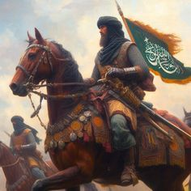

عزيزي القارئ هذه المعلومات من مصادر موثوفة وأخذناها من كتاب الوجه الاخر للخلافة الاسلامية للكاتب سليمان فياض ننصحكم بعدم زيارة أي موقع إلا بالتحقق من مصدر المعلومات اللتي قدمها
في هذه الصفحة سوف نتحدث عن الخلافات الاسلامية ,اهم معاركهم مع الصليبيين والخصوم الأخرى بطريقة مميزة وبسيطة وسوف نقوم بتلخيص الخلافات وسوف نتحدث عن أهم الخلفاء والحكام .
الدولة الاموية و العباسية والعثمانية وبعض الدول الاسلامية الاخرى
الفترة التي تلت الخلافة الراشدة واستمرارها حتى فترة الدولة العثمانية شهدت العديد من الخلافات والانقسامات في العالم الإسلامي. إليك ملخص للخلافات الرئيسية في هذه الفترة: 1. **فترة الخلفاء الراشدين (632 - 661 م):** - بداية بالفترة الراشدة مع الخلفاء أبو بكر وعمر وعثمان وعلي. - انتهت باغتيال الخليفة علي بن أبي طالب. 2. **خلافة بني أمية (661 - 750 م):** - صعود بني أمية وتأسيس الدولة الأموية بعد مقتل الإمام علي. - خلافات بين الدولة الأموية والمسلمين المعارضين، مثل الخلافة العباسية. 3. **الخلافة العباسية (750 - 1258 م):** - ثورة العباسيين وإنشاء الدولة العباسية. - خلافات بين العباسيين والأمويين. - انقسام بين العباسيين بسبب الخلاف حول الخلافة العلوية. 4. **الخلافات الطائفية (فترة متأخرة من العصور الوسطى):** - تشديد الخلافات بين السنة والشيعة. - ظهور العديد من الفرق والمذاهب في الإسلام. 5. **الدولة العثمانية (1299 - 1922 م):** - صعود الدولة العثمانية بقيادة أوسمان بن أرطغرل. - خلافات مع الدول الأوروبية والأمراء الإسلاميين الآخرين. - انهيار الدولة العثمانية بنهاية الحرب العالمية الأولى. في الجملة، هذه الفترة شهدت خلافات في الحكم والسلطة، وانقسامات طائفية ومذهبية، ونزاعات على الخلافة، وتأثير التحولات الثقافية والاقتصادية. أهم المعارك : التاريخ الإسلامي شهد العديد من المعارك والصراعات التي أثرت على مسار الأمم والخلافات الإسلامية. إليك بعضًا من أهم المعارك في الخلافات الإسلامية: 1. **معركة صفين (657 م):** - وقعت بين جيش علي بن أبي طالب وجيش معاوية بن أبي سفيان، في إطار الخصومة الناشبة بين الطرفين بعد مقتل عثمان بن عفان. - انتهت باتفاق بين الطرفين، لكنها أشعلت نار الفتنة. 2. **معركة الهرمل (661 م):** - وقعت بين الحسين بن علي والجيش الأموي بقيادة يزيد بن معاوية. - انتهت بمأساة كربلاء حيث قتل الإمام الحسين وأتباعه. 3. **معركة النهروان (684 م):** - وقعت بين جيشي الخليفة علي بن أبي طالب والخليفة الأموي معاوية بن أبي سفيان. - انتهت بانتصار قوات معاوية، مما أدى إلى تأسيس الدولة الأموية. 4. **معركة دمشق (750 م):** - وقعت بين قوات العباسيين بقيادة أبي العباس السفاح وجيش الأمويين. - انتهت بانتصار العباسيين وسقوط الدولة الأموية. 5. **معركة تلاس (809 م):** - وقعت بين العباسيين والبنو مرين (بنو مرين هم بنو مروان أمويون) في المغرب الأقصى. - انتهت بانتصار العباسيين، وكانت ذات أهمية في تاريخ الإسلام في المغرب. 6. **معركة المنصورة (1250 م):** - وقعت بين المماليك المصريين والجيش الصليبي المغربي. - انتهت بفوز المماليك وتحقيق استقلال مصر عن السلطنة الآيوبية. هذه مجرد نماذج من المعارك الهامة، وهناك العديد من المعارك الأخرى التي أثرت في تطوير التاريخ الإسلامي وشكلت الخلافات السياسية والثقافية.